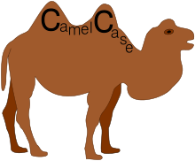
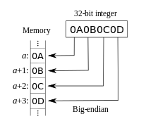
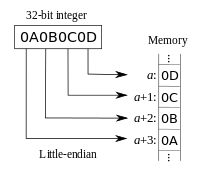
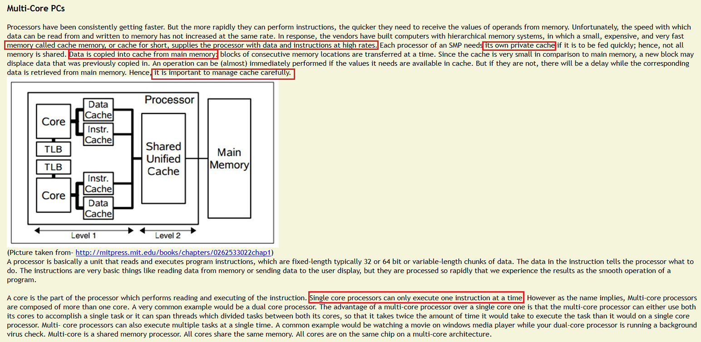
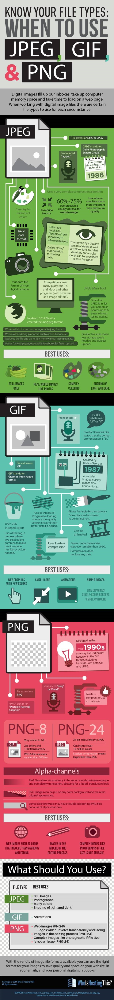

| wikipedia.org | Camel Case is the practice of writing compound words or phrases like camal  |
| wikipedia.org |
Hungarian notation is an naming convention
Name of a variable/function indicates its purpose e.g. A long integer: lAccountNum
|
| wonko.com | Code aesthetics |
| wikipedia.org | Literate programming |
| computerhope.com | CPU : an introduction |
| stackoverflow.com | Why Windows 32-bit is called Windows x86 and not Windows x32 |
| tutorialspoint.com | 8085 cpu architecture |
| brocku.ca | 8086 cpu architecture |
| stackexchange.com | Flags in /proc/cpuinfo |
| wikipedia.org | Big-endian or Little-endian format in computer memory   |
| rutgers.edu | Open specifications for Multi-Processing(OpenMP)  |
| wikipedia.org | Extended Backus–Naur Form (EBNF) |
| lifehacker.co.in | Difference Between Image File Formats (PNG, JPEG, GIF)  |